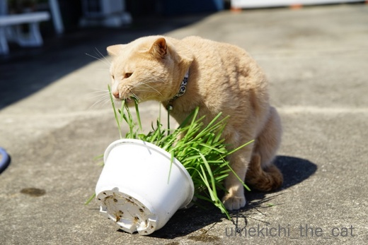
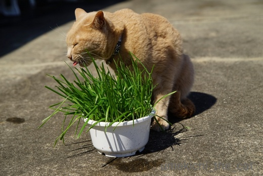
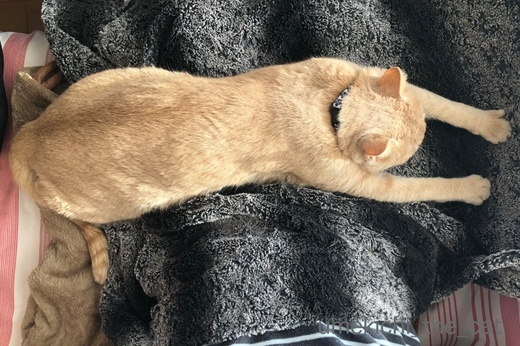
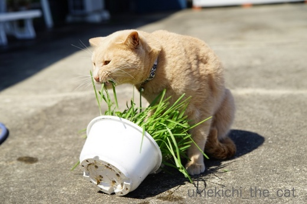
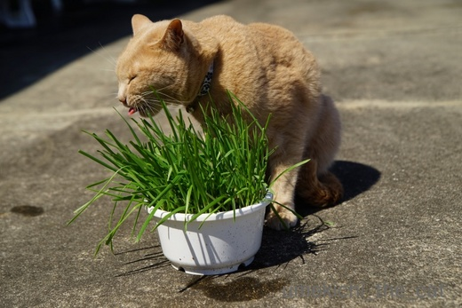
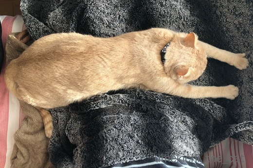

ねこ草と毛玉 [梅吉]
お外で食べるねこ草は格別ですかー？

ねこ草に思い切りお顔を突っ込んでムシャムシャ・・・・・

お外だとそんなことしてもおかーさんに叱られないしね＾＾

あ、タネも一緒に食べちゃった？
勢いよく草を引っこ抜いて食べるのでタネまで一緒に抜けて来て
食べちゃうことが時々あります。
あとでうんPに混ざって出て来ていますが・・・
先日おっとに「なんで梅吉はねこ草食べるの？」と聞かれて
「うーん・・・・・なんでって聞かれてもねぇ」
梅吉の場合は嗜好品みたいなもの。
普通は毛玉の吐き戻しを促すのに食べると聞きますが
梅吉は我が家に来てほぼ３年間毛玉を吐いたことがありません・・・・・
というか吐くという行為が２ー３回あったかな、という程度なのです。
先代・先先代とゲロゲロっ子だったのに！
今までは若いから、と気にもしていなかったのですが梅吉もそろそろ３才。
毛玉がお腹にたまっているんじゃとちょっと心配になって来ました。
うんPと一緒に出ていると思ってはいるのですが・・・
来週末が定期診察なので獣医さんに聞いてみようっと。

今朝のちゅうちゅうポーズ onおかーさんのお膝の上Ｏ(≧▽≦)Ｏ
 ↑ガブッと一押し↑
↑ガブッと一押し↑
KALDIの台湾フェアの戦利品。
お酒は台湾と関係ありません (^▽^;)
猫柄についつい。

ねこ草に思い切りお顔を突っ込んでムシャムシャ・・・・・

お外だとそんなことしてもおかーさんに叱られないしね＾＾

あ、タネも一緒に食べちゃった？
勢いよく草を引っこ抜いて食べるのでタネまで一緒に抜けて来て
食べちゃうことが時々あります。
あとでうんPに混ざって出て来ていますが・・・
先日おっとに「なんで梅吉はねこ草食べるの？」と聞かれて
「うーん・・・・・なんでって聞かれてもねぇ」
梅吉の場合は嗜好品みたいなもの。
普通は毛玉の吐き戻しを促すのに食べると聞きますが
梅吉は我が家に来てほぼ３年間毛玉を吐いたことがありません・・・・・
というか吐くという行為が２ー３回あったかな、という程度なのです。
先代・先先代とゲロゲロっ子だったのに！
今までは若いから、と気にもしていなかったのですが梅吉もそろそろ３才。
毛玉がお腹にたまっているんじゃとちょっと心配になって来ました。
うんPと一緒に出ていると思ってはいるのですが・・・
来週末が定期診察なので獣医さんに聞いてみようっと。

今朝のちゅうちゅうポーズ onおかーさんのお膝の上Ｏ(≧▽≦)Ｏ
KALDIの台湾フェアの戦利品。
お酒は台湾と関係ありません (^▽^;)
猫柄についつい。

カフェオレ色の梅吉

梅吉 2023年8月10日 永眠


梅吉と出会った譲渡会

犬猫の理由なき殺処分ゼロ
妄想広告
UMEKICHI 光

爆発的に早い！
時々攻撃的！
Thanks to Mr.Boss365
爆発的に早い！
時々攻撃的！
Thanks to Mr.Boss365

梅吉さん♪
豪快に食べてますねぇ～(#^.^#)
同じ猫草でも外で食べると格別！！
まさにピクニック気分ですね！！
by きぃ (2018-04-12 15:46)
日本猫の短毛種なら毛玉の心配はいらないでしょう。溜まってくると食欲減退やウンチが出にくくなるなどの症状が出ます。梅吉さんには全く関係ないと思われます。うちでは猫草は引っこ抜いて遊ぶものとなっていて誰も食べないのでやめました。梅吉さんの舌を出してムシャムシャのお顔が良いですね~。
by zombiekong (2018-04-12 16:11)
さすが「漢 梅吉さん」顔を突っ込んでムシャムシャなんですねぇ＾＾
外だと鉢を倒しても無問題だから、何も気にせず食べられるねぇ(^-^)
うちのにゃんずは猫草食べないんですよねぇ(*_*)
今朝のチュウチュウポーズ、梅吉さんが行き倒れてるのかとｗ
by ニッキー (2018-04-12 16:14)
梅吉さん、夢中になって食べていますね。
鉢ごとって、梅吉さんどれだけ力強いの（笑）
梅吉さん3歳、元気で何よりです。
by kiki (2018-04-12 16:24)
美味しそうに食べてて、グルメ番組のリポーターになれそう(^_^;)
豪快な食べっぷりから、「くいしん坊！万才」がいいかな(〃'∇'〃)
by middrinn (2018-04-12 16:35)
うちも長毛のわりには、あまり毛玉は吐かないです。
うんPに混ざって出てきてますよ。長い毛だから分かる(笑)
シャンプーのあとは普段よりも毛繕いするから吐くけどｗ
梅吉君美味しそうに食べてますね～
うちも引っこ抜いて食べるタイプ！(笑)
そろそろ猫草育てようかな。花粉の季節も終わってベランダ出られるようになったし(笑)
by リュカ (2018-04-12 17:12)
梅吉さん、ネコ草をがぶがぶ食べていますね！
普通はネコ草食べて毛玉をはき出すのが一般的みたいですね(^^)
by ma2ma2 (2018-04-12 20:30)
うちのも毛玉を吐くのと吐かないのがいますね〜
毛づくろいを頻繁にしてるコほど吐く気がします。
マロとオリーブはカラダがデカイせいか、毛づくろいが下手くそで、やったら毛がベタベタ、しかもあんまりしてないです。
by BillK-ko (2018-04-12 21:00)
猫草、育てています。
モモはしょっちゅう下呂下呂します。
ユキも時々、毛呂毛呂します。
片付けるのは奥さんの仕事です(^^;
by riverwalk (2018-04-12 22:20)
梅吉さん、豪快に楽しんでますね～＾＾
うちでもまとまった毛玉というのは見ませんでしたが、短毛種なら大丈夫らしいですよ。
うちの猫たちには猫草は無視されました‥
私が生ける花の中から気に入った葉っぱを見つけるのが楽しみだったようです＾＾；
by sana (2018-04-13 01:26)
うちの場合、毛を吐くよりも
食べ過ぎたカリカリを吐く確率が高いです＾＾；
by ぽちの輔 (2018-04-13 06:48)
梅吉くんがあんまり美味しそうに猫草を食べているものだから
私も食べて見たくなってきたよ。
きれいに洗って一度味見してみようｗ
短毛種はあまり毛玉を吐きませんね。ほとんど吐いたことがない子が
いきなり吐くと、それはもう慌ててしまいます。
家はタラオがよく吐くの。一気にドカ食いした後は必ずと言っていいほどです(^-^;
by emi (2018-04-13 15:21)
ウチのは熱心にグルーミングするせいか、換毛期には毛玉を吐くことがあり、毎日のコロコロが欠かせません^^;
猫草は最初に育てるのに失敗してカビだらけにして断念。
なので、こてつは猫草を食べたことがありません(^▽^;)
by ゆきち (2018-04-13 21:16)
おぉう、いい草抜きっぷり（笑）
我が家の先代も、食べるというよりは引っこ抜いて泥を落とすので
禁止令が出ましたよ^^;
えん麦は、育てるのヘタなのか、すぐ黄色くさせてしまいます・・・。
ちゅうちゅうポーズがたまらん！この子、萌えのテロやで！（≧艸≦）
KALDIのにゃんカップ、わたしも買いました！
これ、柄が広いので１枚の写真に収めるのがむずかしいです^^;
by Ja-Kou66 (2018-04-14 00:47)
おぉぉ！ さすが梅吉さん、豪快ですにゃ〜♪
公園の子たちも、いまの季節、もぐもぐタイムが増えてますよ(^^)v
by のらん (2018-04-14 08:09)
あ、げ~っとした顔が、またかわいい。
食べるんですね~猫草。
友達は、いっぱい植えたのに
食べてくれなくて、ただの草むらだと
なげいていました^m^
by ふにゃいの (2018-04-14 16:48)
あかりも今度の7月で3歳になるのですが、
短毛だからか、３回しか吐いたことがありません。
換毛期でも、長毛さんに比べると
そんなに毛も抜けてないようなんです。
梅吉さんの定期受診で、獣医さんが何て仰るのか
私も参考にさせていただきたいです＾＾
梅吉さん、素敵なカフェオレ色♪
いつも表情豊かで可愛いな～( ´∀｀ )
by マーヤ (2018-04-14 19:00)
うちもあんまり毛を吐かないので、溜まってるのかうんPと出てるのか悩むところです(^_^;)
ネコ柄というだけで買ってしまう衝動！わかるよ～そうやってどんどん増えていくんだよねー(-_-;)
by palpal (2018-04-15 11:45)
毛玉を吐く子も、吐かない子もいるんですね。
ここにコメント書いてる皆さんちのにゃんこも色々。
ともあれ、元気なのが一番ですね(≧∀≦)
by よーちゃん (2018-04-16 09:59)
日差しを浴びて光合成してる葉っぱは
一味違うのかな？
違いの解るグルメさん。
by 響 (2018-04-16 10:49)
きぃさん＞
お天気が良いとまさにピクニック気分なんでしょうね＾＾
私たちがベランダでBBQしている時も一緒に外で楽しみたいのですが
すぐに脱走経路を探し始めて落ち着いて食べていられないので
お家でお留守番になっちゃう梅吉です (^▽^;)
窓越しにめっちゃ見てますけどwww
zombiekongさん＞
うんPはそれはそれはご立派なのをなさるし（笑）
食欲はありすぎて困るくらいなので
私もそれほど心配はいらないなとも思っているのですが・・・
歳とともにうんPから排出もされにくくなりますよねー。
そうなったら吐くようになるのかな？？
梅吉はしゃくしゃくと良い音させて猫草を食べますよ。
美味しそうって思えるくらい(*>艸<)
ニッキーさん＞
にゃんずさんは「ゲー」するのかしら・・・
猫草を食べなくても吐き戻せるならそれはそれでOKですよね＾＾
梅吉は豪快に猫草を食べるのでカリカリで満たされない分を
猫草で補おうとしている？って思えるほどです(^▽^;)
あのチュウチュウポーズのまま動かなくなるので
ニッキーさんの行き倒れ説は本当です！！
どうしてわかったのですか(＠◇＠)
kikiさん＞
梅吉の推定誕生日は今月22日です＾＾
食い意地張っているから他の兄弟猫を押しのけながら
猫のお母さんのおっぱいを吸っていたんだろうなぁ(*>艸<)
家の中で猫草を食べさせる時は私が鉢を抑えているのですが・・・
ちょっと気を抜いたりぼんやりしていると
抑えていても鉢をひっくり返されちゃいますw
これも食い意地ゆえ、なのかしら・・・
middrinnさん＞
なんでも食べる、食いっぷりが良い、まずいって言わない・・・
まさにグルメ番組にぴったりの梅吉です(*>艸<)
ただ、「待てない」ので食前のリポートは無しです(^_－)☆
グルメ、じゃないので「孤独のグルメ」もダメだわwww
リュカさん＞
私も時々うんPを凝視するのですが（割ってもみるw)
毛玉なのか猫草の塊なのか判別がつかなくって・・・
シャンプー後吐いたことがあるのは一回だけ。
綺麗に胃の形（食道の形？）で出て来たよー！
梅吉の場合まだ若いから大丈夫かなって思っていますが
シニアの年齢になったらもう少し気にしなきゃいけないかなって思ってます。
この季節猫草もぐんぐん育つよ！
ベランダ栽培ぜひぜひ＾＾
そうそう！うちも「ヨロコブラ」買いました！！
ma2ma2さん＞
猫草は整腸剤、って言われていますが
梅吉はお腹を満たすために食べている？って思えるくらいですw
BillK-koさん＞
梅吉もそんなに毛づくろいは熱心じゃないかな・・・
ただうちは比較対象猫がいないのでなんとも言えませんー！
普通眠る前に毛づくろいをして・・・がニャンコだと思いますが
それはない！やっぱりズボラ？(*>艸<)
riverwalkさん＞
良いですね！下呂下呂！！毛呂毛呂！！！
字がサイコーＯ(≧▽≦)Ｏ
梅吉も上手に毛呂下呂（これもあり？）出来るようになると良いなー＾＾
私も処理は得意ですよ（先代で鍛えられました）
「来る！」と思ったらサッとチラシやティッシュを
吐くポイントに投下させることが出来ます(๑˃̵ᴗ˂̵)و
by ちぃ (2018-04-16 15:46)
sanaさん＞
猫によってもいろいろみたいですね＾＾
先先代は短毛種でしたがよーっく毛玉を吐いていたのですよ。
ほんと、キレイに丸まっていました。
梅吉も花を生けるとよってきてかじって花瓶ごと倒すという(^▽^;)
我が家はトイレ以外生花は飾れませんw
ぽちの輔さん＞
わー！勿体無い！！
うちも先代猫がよく未消化のカリカリ吐いてました。
で、吐いてスッキリしてお腹すいたーとwww
emiさん＞
動画だと美味しそうに猫草を噛む「しゃくしゃく」という音がするので
さらに猫草欲が増すかもー(*>艸<)
今度アップしちゃおうかしらw
猫草はズバリ、草の味ですw
ベビーリーフミックスに入ってたら猫草ってわからないかもー！
吐くのは猫の習性、ってわかっていてもたまにしかしない子は
「具合悪い！？」って心配しちゃいますよねー。
それが（猫）親心だし(〃▽〃)
ゆきちさん＞
こてつくん、ブラシだとさらに毛が取れるよー！
こてつくんの被毛は厚そうだから気持ちが良いと思うのですが・・・
日々のコロコロエステを頑張るしかないですね(^_－)☆
猫草は誰に教わったわけでもないのに初めて見せた時には
「たべるにゃー！はようー！！」と大騒ぎでした。
本能ってスゴイwww
Ja-Kou66さん＞
そうそう！タネごと引っこ抜いて鉢はぶん回して
挙げ句の果てには猫草全体を鉢から出して・・・(^▽^;)
でも猫草は大好きで催促されるので家の中で食べている間は
私が鉢を抑えています。
下僕だなーと感じる時間でもありますwww
ちゅうちゅうポーズ良いでしょー＾＾
ちゅうちゅう後このポーズのまま動かなくなるので
行き倒れ感満載になります(*>艸<)
のらんさん＞
公園のにゃんさんたちは年中お外ご飯ですが
この季節は特別感♪がありそうですねー＾＾
お日様を浴びながらぬくぬくお食事、人間も大好きですものね！！
by ちぃ (2018-04-16 18:04)
ふにゃいのさん＞
お友達、せっかく植えたのに・・・(*>艸<)
でも猫様あるあるなんですよね、その反応！
猫草は普段は毎夕食後に与えているのですが
楽しみにしていて「食べる？」と聞くと
「んなーっ！！」と走ってきます＾＾
マーヤさん＞
あかりちゃんと梅吉、同級生ですねー＾＾（ナノくんも♡）
食欲もあるしうんPも立派だし（笑）
毛玉を出せなくて苦しんでいる様子はないので
大丈夫だとは思うのですが・・・
怪しい体調の変化や毛玉のたまり具合を検査できるものなのか触診か？？
その辺りを聞いてこようと思っています。
palpalさん＞
梅吉は毛玉も食べ物も吐かない(^▽^;)
勿体無いって思っている？(*>艸<)
うんP、たまに割ってみるんですが良くわからなくって・・・・
獣医さんのご意見、参考までに後日記事にしますねー＾＾
よーちゃん＞
毛玉の件はほんと、個体差、に尽きるのですが・・・
梅吉は今の所元気すぎるくらい元気なのがありがたいです＾＾
響さん＞
今頃の柔らかい猫草が一番美味しいと言っております＾＾
夏場は葉っぱが硬くなっていまひとつなんだそうですwww
by ちぃ (2018-04-16 20:27)